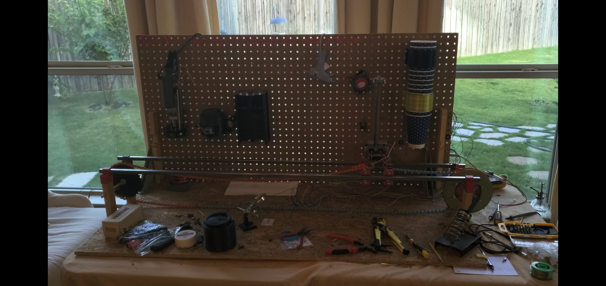

Coffee Robot

For the past three years, I've been dedicated to a passion project that fuses technology and the art of brewing coffee. CoffeeBot, my brainchild, is an innovative robotic system designed to craft the perfect cup of coffee. This project has been a labor of love, blending my interests in robotics, automation, and, of course, the delightful world of coffee.
The heart of CoffeeBot is a meticulously engineered robot capable of preparing a wide array of coffee beverages, from lattes to Americanos, mochas, and more. This marvel of technology not only expertly mixes espresso and milk but also offers customization options like syrups and sweeteners to cater to individual taste preferences. The final touch? A precise sealing of the cup with a perfectly fitted lid, ensuring a delightful experience with every sip.
My journey with CoffeeBot recently reached a significant milestone when I successfully completed the first stage. I built a functional prototype that can assemble a chocolate milk, showcasing the potential to make coffees, when the app is created and the final version is assembled. This achievement marks the culmination of countless hours of research, design, and engineering, and it paves the way for the project's next exciting phase: developing a user-friendly mobile app to interact with CoffeeBot.
As I continue to work on this project, my aim is to refine CoffeeBot's capabilities and expand its repertoire. The development of the mobile app is already underway, which will allow the user to customize their coffee and interact with CoffeeBot with ease.
CoffeeBot embodies my dedication to innovation, technology, and a love for coffee. It represents my academic pursuits and personal passions, and I can't wait to see where this journey takes me next. Stay tuned for more exciting updates on CoffeeBot, and feel free to explore this website to learn more about this ambitious project.